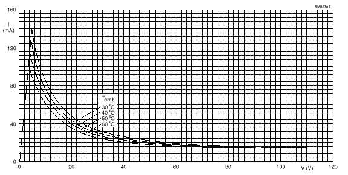

Componente
La resistencia PTC (Positive Temperature Coefficient) es una resistencia cuyo valor óhmico depende de la temperatura. Esta resistencia se caracteriza por el aumento del valor óhmico a medida que aumenta la temperatura, por tanto presenta un coeficiente de temperatura positivo.
Las diferencias con las NTC son:
- El coeficiente de temperatura de un termistor PTC es único entre unos determinados márgenes de temperaturas. Fuera de estos márgenes, el coeficiente de temperatura es cero o negativo.
- El valor absoluto del coeficiente de temperatura de los termistores PTC es mucho más alto que el de los termistores NTC.
Las resistencias PTC se utilizan en una gran variedad de aplicaciones: limitación de corriente, sensor de temperatura, desmagnetización y para la protección contra el recalentamiento de equipos tales como motores eléctricos. También se utilizan en indicadores de nivel, para provocar retardos en circuitos, como termostatos, y como resistencias de compensación.
